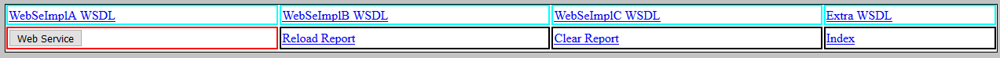
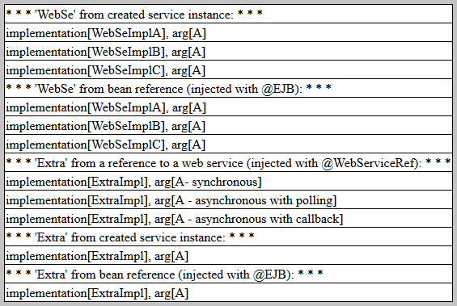
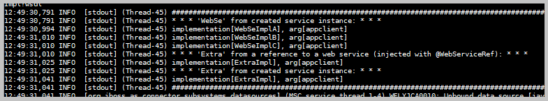
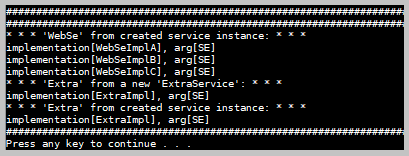
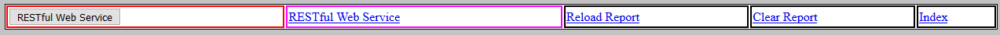
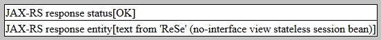
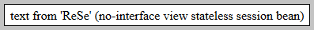

package
kp.w_s in 'common' module. package
kp.w_s in 'ejb' module. package
kp.w_s in 'web' module. package
kp.client in 'appclient' module. package
kp.se in 'se' module.
package
kp.w_s in 'common' module. package
kp.w_s in 'ejb' module. package
kp.w_s in 'web' module. package
kp.client in 'appclient' module. package
kp.se in 'se' module.Java source code:
package
kp.w_s in 'common' module.
package
kp.w_s in 'ejb' module.
package
kp.w_s in 'web' module.
package
kp.client in 'appclient' module.
package
kp.se in 'se' module.
Web service class 'ExtraImpl' was processed with tools: 'wsgen' and 'wsimport' (as a part of Maven build).
Initial actions:

 Go to page http://localhost:8080/Study04/
and select "Research Web Services".
Go to page http://localhost:8080/Study04/
and select "Research Web Services".

Screen from "Research Web Services" page controls.
Action:
Push button "Web Service".

Screen from 'Web Service' action.
Additionally to the web client there were implemented the JBoss application client and the Java SE client.

Screen from JBoss application client run.

Screen from Java SE client run.
Java source code:
package
kp.r_s.
Initial actions:
Go to page http://localhost:8080/Study04/
and select "Research RESTful Web Services".

Screen from "Research RESTful Web Services" page controls.
Action:
Push button "RESTful Web Service".

Screen from 'RESTful Web Service' button action.
Action:
Click link "RESTful Web Service".

Screen from 'RESTful Web Service' link action.